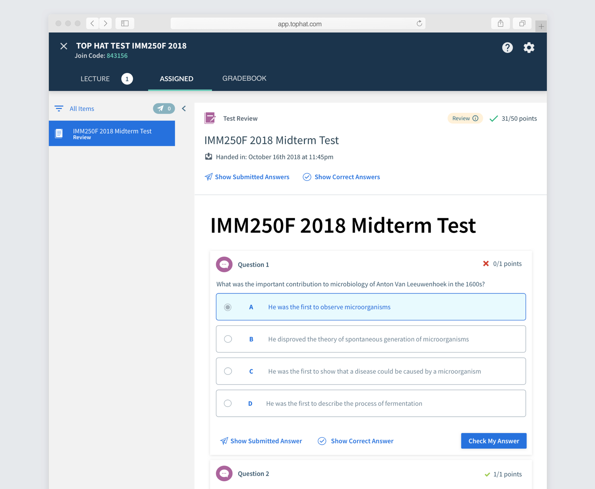
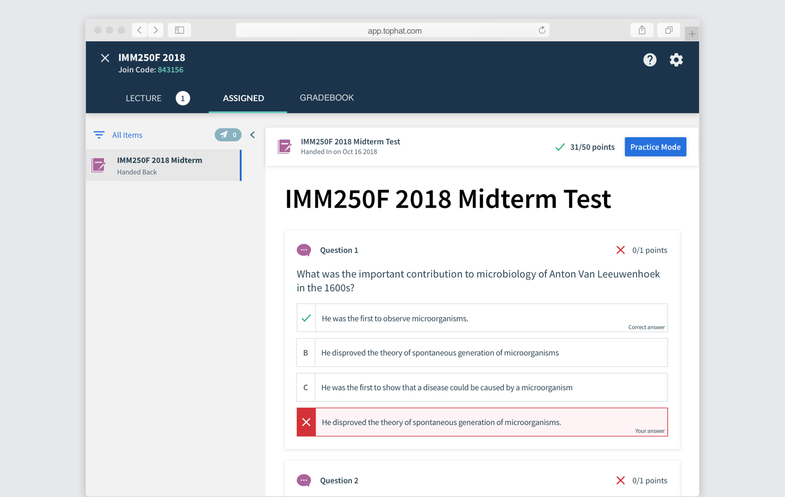
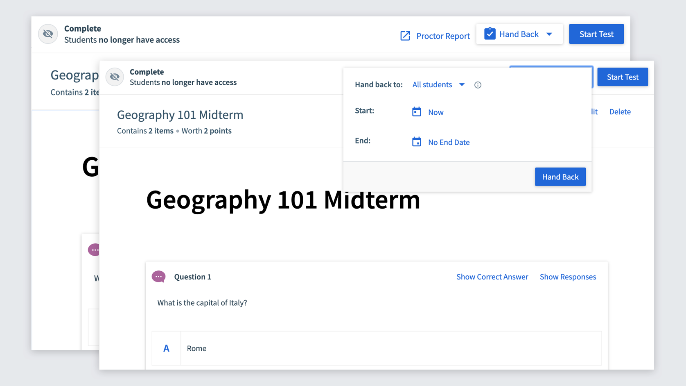
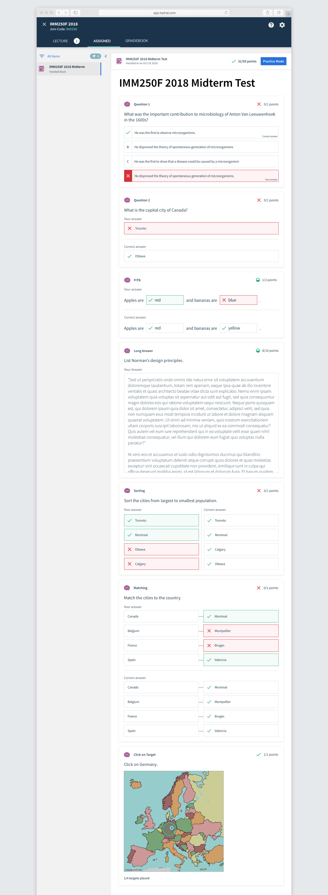
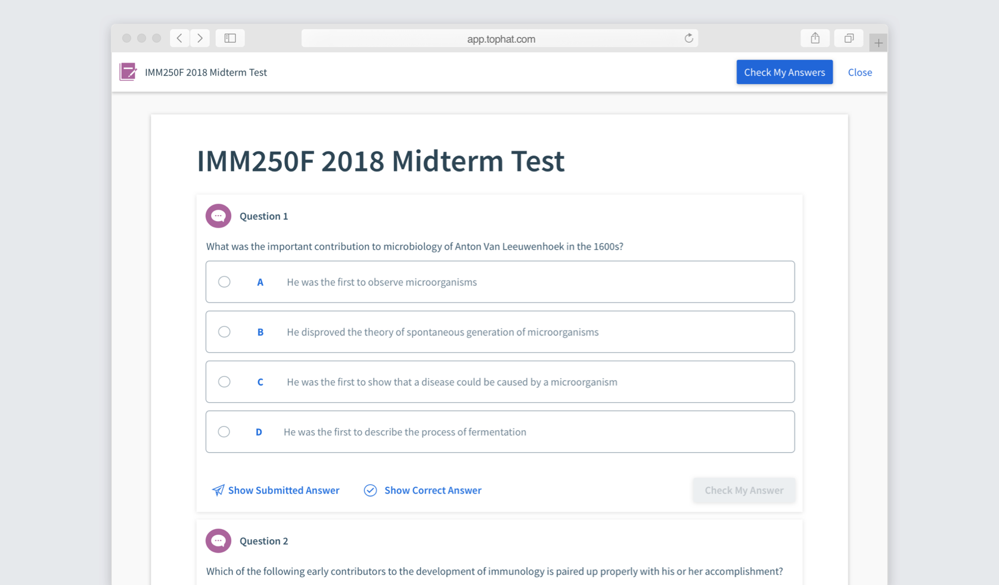
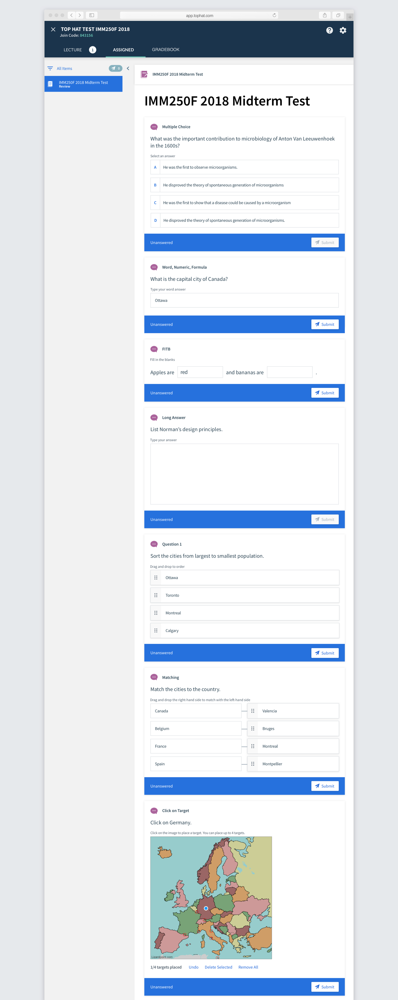

Top Hat has a Test product, where professors can administer secure tests within the platform. Missing from the product was the ability to hand back the tests for students to review, similar to paper tests. The goal was to build a feature for students to review how they did on each question in order to reach parity with this aspect of paper testing.
The test experience is something very familiar to students. It is also something that can be very particular to them, as it's typically a stressful time for both students and profs. Thus, I knew I needed to at least match, and preferably exceed, the experience of handing back a paper test. It needed to:
Many profs also said that they don't hand back tests to the class because they want to reuse their tests. Instead, if students want to review their tests, they have to come look it over during office hours. So, our solution needed to fit this use case as well.
My initial thought was to apply our existing Review mode to Test. Profs can currently assign questions and pages to review mode, allowing students to quiz themselves as well as viewing the correct answer. They can toggle between their previously submitted answer and the correct answer. This would be a familiar pattern to our users, maintaining consistency across products. It would also be quite straightforward to build.
We tested this solution with a few profs, and they expressed frustration at not being able to view the correct answer at the same time as the submitted answer. They were also a bit confused by the word "Review", even though it's used throughout the app. They kept defaulting to the term "Hand Back".
Based on the professors' feedback, I designed a second version that prioritized students being able to see their answers against the correct answers, with a secondary mode for practicing. I also took this as an opportunity to redesign the questions to be more in line with our recently redesigned iOS app.
We brought 10 students into the office who had recently taken a test using Top Hat Test. I asked them to imagine that they were getting their test handed back to them via Top Hat. I then tested each version, alternating order, with the students, observing how they interacted with each. I then asked them their preference. 8/10 students preferred Version 2 since they found it clearer to review their tests. They really liked having Practice Mode, but preferred having it separate from their answers.
The prof half of the interface was simple, with a Hand Back button that only appears once the test ends with student responses. Profs can also hand back the test to individual students to accomodate for the office hours use case.
To complete the student designs, I had to design a solution for all 7 question types. I also tested out several versions of how to display the correct answer vs the submitted answer. The submitted answers are always filled in with red or green to indicate correctness with a colored border. The correct answer merely has the checkmark. Both also explicity state "Your answer" and "Correct answer", but it needed to be clear from a glance.
When a student clicks on Practice Mode, the test opens in full screen, similar to the actual testing experience. They can go through and answer all the questions, either checking them individually or globally. This is just our current Review Mode applied to this use case.
As you can see above, the question styling in Practice Mode is in an older style than seen in the main part of Handback. I redesigned all the question inputs with the plan to eventually update all the questions throughout the app. This had to be done alongside the hand back to ensure that it would all work cohesively.
